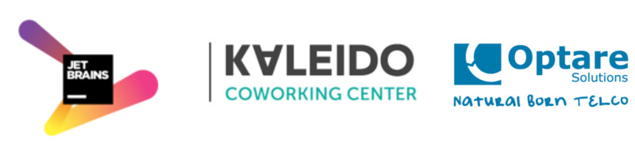
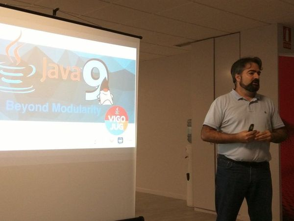

Presentación

VigoJUG
Un meetup el primer martes de cada mes
370 miembros en Meetup en un año de vida
Otras iniciativas: taller virtual #VigoJUG-taller, reto, etc.
Canal de slack #VigoJUG en http://www.vigotech.org


¿Preguntas?
Slack: canal #vigojug en http://www.vigotech.org
Twitter: @vigojug